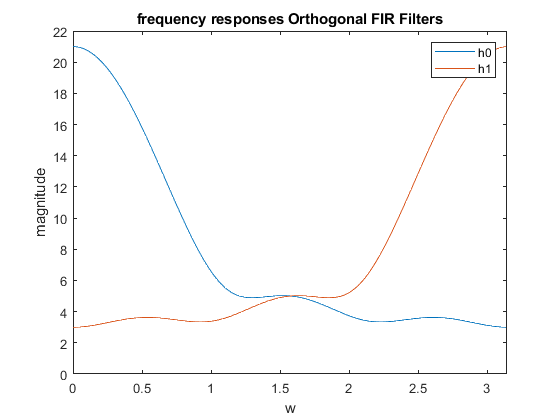
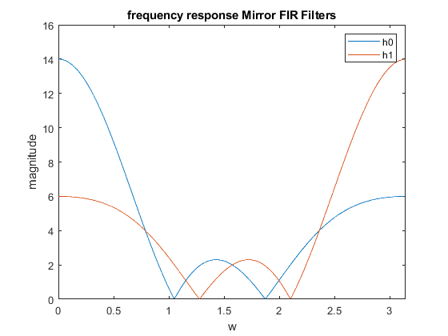

Digital Signal Processing MATLAB HW2 - q4
Professor: Dr. Sheikhzadeh Author: Maryam Barazande - 9723016 E-mail: maryambarazande7@gmail.com University: Amirkabir University of Technology
Contents
Clear recent data
clear; close all; clc;
Symmetries and Filter Types
a. Orthogonal FIR Filters
ho0=[1 2 3 4 5 6]; %original filter ho1=[6 -5 4 -3 2 -1]; %orthogonal filter w=0:(2*pi/511):pi; H0o=fft(ho0,512); H1o=fft(ho1,512); figure(1); plot(w,abs(H0o(1:256))); hold on; plot(w,abs(H1o(1:256))); legend("h0", "h1"); axis([0 pi 0 22]); title('frequency responses Orthogonal FIR Filters'); xlabel('w'); ylabel("magnitude");
c , d. Mirror FIR Filters
c H1(z) = H0(−z) H1(e^jω) = H0(e^j(ω+π))
% d h0m=[1 3 1 4 1 3 1]; %original filter h1m=[1 -3 1 -4 1 -3 1]; %Mirror filter wm=0:(2*pi/511):pi; H0m=fft(h0m,512); H1m=fft(h1m,512); figure(2); plot(wm,abs(H0m(1:256))); hold on; plot(wm,abs(H1m(1:256))); legend("h0", "h1"); axis([0 pi 0 16]); title('frequency response Mirror FIR Filters'); xlabel('w'); ylabel("magnitude");